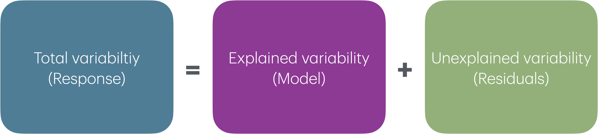

Model evaluation
Feb 04, 2025
Announcements
Lab 02 due Thursday at 11:59pm
HW 02 released later today
Click here to learn more about the Academic Resource Center
Statistics experience due Tuesday, April 15
Office hours poll
Topics
- Recap of MLR and predictor types
- Interaction terms
- ANOVA and sum of squares
- \(R^2\) and RMSE
Computational setup
Recap: Multiple linear regression
Data: Palmer penguins
The penguins data set contains data for penguins found on three islands in the Palmer Archipelago, Antarctica. Data were collected and made available by Dr. Kristen Gorman and the Palmer Station, Antarctica LTER, a member of the Long Term Ecological Research Network. These data can be found in the palmerpenguins R package.
# A tibble: 342 × 4
body_mass_g flipper_length_mm bill_length_mm species
<int> <int> <dbl> <fct>
1 3750 181 39.1 Adelie
2 3800 186 39.5 Adelie
3 3250 195 40.3 Adelie
4 3450 193 36.7 Adelie
5 3650 190 39.3 Adelie
6 3625 181 38.9 Adelie
7 4675 195 39.2 Adelie
8 3475 193 34.1 Adelie
9 4250 190 42 Adelie
10 3300 186 37.8 Adelie
# ℹ 332 more rowsVariables
Predictors:
bill_length_mm: Bill length in millimetersflipper_length_mm: Flipper length in millimetersspecies: Adelie, Gentoo, or Chinstrap species
Response: body_mass_g: Body mass in grams
The goal of this analysis is to use the bill length, flipper length, and species to predict body mass.
Response vs. predictors

Model fit
penguin_fit <- lm(body_mass_g ~ flipper_length_mm + species +
bill_length_mm, data = penguins)
tidy(penguin_fit) |>
kable(digits = 3)| term | estimate | std.error | statistic | p.value |
|---|---|---|---|---|
| (Intercept) | -3904.387 | 529.257 | -7.377 | 0.000 |
| flipper_length_mm | 27.429 | 3.176 | 8.638 | 0.000 |
| speciesChinstrap | -748.562 | 81.534 | -9.181 | 0.000 |
| speciesGentoo | 90.435 | 88.647 | 1.020 | 0.308 |
| bill_length_mm | 61.736 | 7.126 | 8.664 | 0.000 |
Interpreting \(\hat{\beta}_j\)
- The estimated coefficient \(\hat{\beta}_j\) is the expected change in the mean of \(Y\) when \(X_j\) increases by one unit, holding the values of all other predictor variables constant.
- Example: The estimated coefficient for
flipper_length_mmis 27.429. This means for each additional millimeter in a penguin’s flipper length, its body mass is expected to be greater by 27.429 grams, on average, holding species and bill length constant.
Indicator variables
| term | estimate | std.error | statistic | p.value | conf.low | conf.high |
|---|---|---|---|---|---|---|
| (Intercept) | -3904.387 | 529.257 | -7.377 | 0.000 | -4945.450 | -2863.324 |
| flipper_length_mm | 27.429 | 3.176 | 8.638 | 0.000 | 21.182 | 33.675 |
| speciesChinstrap | -748.562 | 81.534 | -9.181 | 0.000 | -908.943 | -588.182 |
| speciesGentoo | 90.435 | 88.647 | 1.020 | 0.308 | -83.937 | 264.807 |
| bill_length_mm | 61.736 | 7.126 | 8.664 | 0.000 | 47.720 | 75.753 |
Interpret the coefficient of Gentoo in the context of the data.
Centering
- Centering a quantitative predictor means shifting every value by some constant \(C\)
\[ X_{cent} = X - C \]
One common type of centering is mean-centering, in which every value of a predictor is shifted by its mean
Only quantitative predictors are centered
Center all quantitative predictors in the model for ease of interpretation
How does centering change the model and/or interpretations?
Standardizing
- Standardizing a quantitative predictor mean shifting every value by the mean and dividing by the standard deviation of that variable
\[ X_{std} = \frac{X - \bar{X}}{S_X} \]
Only quantitative predictors are standardized
Standardize all quantitative predictors in the model for ease of interpretation
How does standardizing change the model and/or interpretations?
Interaction terms
Interaction terms
- Sometimes the relationship between a predictor variable and the response depends on the value of another predictor variable.
- This is an interaction effect.
- To account for this, we can include interaction terms in the model.
Bill length versus species
If the lines are not parallel, there is indication of a potential interaction effect, i.e., the slope of bill length may differ based on the species.

Interaction term in model
| term | estimate | std.error | statistic | p.value |
|---|---|---|---|---|
| (Intercept) | -4297.905 | 645.054 | -6.663 | 0.000 |
| flipper_length_mm | 27.263 | 3.175 | 8.586 | 0.000 |
| speciesChinstrap | 1146.287 | 726.217 | 1.578 | 0.115 |
| speciesGentoo | 54.716 | 619.934 | 0.088 | 0.930 |
| bill_length_mm | 72.692 | 10.642 | 6.831 | 0.000 |
| speciesChinstrap:bill_length_mm | -41.035 | 16.104 | -2.548 | 0.011 |
| speciesGentoo:bill_length_mm | -1.163 | 14.436 | -0.081 | 0.936 |
Interaction terms in the model
| term | estimate | std.error | statistic | p.value |
|---|---|---|---|---|
| (Intercept) | -4297.905 | 645.054 | -6.663 | 0.000 |
| flipper_length_mm | 27.263 | 3.175 | 8.586 | 0.000 |
| speciesChinstrap | 1146.287 | 726.217 | 1.578 | 0.115 |
| speciesGentoo | 54.716 | 619.934 | 0.088 | 0.930 |
| bill_length_mm | 72.692 | 10.642 | 6.831 | 0.000 |
| speciesChinstrap:bill_length_mm | -41.035 | 16.104 | -2.548 | 0.011 |
| speciesGentoo:bill_length_mm | -1.163 | 14.436 | -0.081 | 0.936 |
- Write the model equation for penguins in the Adelie species.
- Write the model equation for penguins in the Chinstrap species.
Interpreting interaction terms
- What the interaction means: The effect of bill length on the body mass is 41.035 less when the penguin is from the Chinstrap species compared to the effect for the Adelie species, holding all else constant.
- Interpreting
bill_length_mmfor Chinstrap: For each additional millimeter in bill length, we expect the body mass of Chinstrap penguins to increase by 31.657 grams (72.692 - 41.035), holding all else constant.
Summary
In general, how do
indicators for categorical predictors impact the model equation?
interaction terms impact the model equation?
Model evaluation
Data: Restaurant tips
Which variables help us predict the amount customers tip at a restaurant? To answer this question, we will use data collected in 2011 by a student at St. Olaf who worked at a local restaurant.
# A tibble: 8 × 4
Tip Party Meal Age
<dbl> <dbl> <chr> <chr>
1 2.99 1 Dinner Yadult
2 2 1 Dinner Yadult
3 5 1 Dinner SenCit
4 4 3 Dinner Middle
5 10.3 2 Dinner SenCit
6 4.85 2 Dinner Middle
7 5 4 Dinner Yadult
8 4 3 Dinner MiddleVariables
Predictors:
Party: Number of people in the partyMeal: Time of day (Lunch, Dinner, Late Night)Age: Age category of person paying the bill (Yadult, Middle, SenCit)
Response: Tip: Amount of tip in US dollars
Response: Tip

| Min | Q1 | Median | Q3 | Max | Mean | SD |
|---|---|---|---|---|---|---|
| 0 | 3 | 4.5 | 6 | 19.46 | 4.98 | 3.37 |
Predictors

Relevel categorical predictors
Predictors, again

Response vs. predictors

Fit and summarize model
| term | estimate | std.error | statistic | p.value |
|---|---|---|---|---|
| (Intercept) | -0.170 | 0.366 | -0.465 | 0.643 |
| Party | 1.837 | 0.124 | 14.758 | 0.000 |
| AgeMiddle | 1.009 | 0.408 | 2.475 | 0.014 |
| AgeSenCit | 1.388 | 0.485 | 2.862 | 0.005 |
Overall, how well does this model help us understand variability n tips?
Two statistics
Root mean square error, RMSE: A measure of the average error (average difference between observed and predicted values of the outcome)
R-squared, \(R^2\) : Percentage of variability in the outcome explained by the regression model
What indicates a good model fit? Higher or lower RMSE? Higher or lower \(R^2\)?
RMSE
\[ RMSE = \sqrt{\frac{\sum_{i=1}^n(y_i - \hat{y}_i)^2}{n}} = \sqrt{\frac{\sum_{i=1}^ne_i^2}{n}} \]
Ranges between 0 (perfect predictor) and infinity (terrible predictor)
Same units as the response variable
The value of RMSE is more useful for comparing across models than evaluating a single model
Compute RMSE: Augmented data frame
Use the augment() function from the broom package to add columns for predicted values, residuals, and other observation-level model statistics
# A tibble: 169 × 9
Tip Party Age .fitted .resid .hat .sigma .cooksd .std.resid
<dbl> <dbl> <fct> <dbl> <dbl> <dbl> <dbl> <dbl> <dbl>
1 2.99 1 Yadult 1.67 1.32 0.0247 2.04 0.00274 0.657
2 2 1 Yadult 1.67 0.333 0.0247 2.05 0.000173 0.165
3 5 1 SenCit 3.05 1.95 0.0371 2.04 0.00911 0.972
4 4 3 Middle 6.35 -2.35 0.0111 2.04 0.00376 -1.16
5 10.3 2 SenCit 4.89 5.45 0.0301 2.00 0.0571 2.71
6 4.85 2 Middle 4.51 0.337 0.0126 2.05 0.0000881 0.166
7 5 4 Yadult 7.18 -2.18 0.0471 2.04 0.0148 -1.09
8 4 3 Middle 6.35 -2.35 0.0111 2.04 0.00376 -1.16
9 5 2 Middle 4.51 0.487 0.0126 2.05 0.000184 0.240
10 1.58 1 SenCit 3.05 -1.47 0.0371 2.04 0.00524 -0.737
# ℹ 159 more rowsFinding RMSE in R
Use the rmse() function from the yardstick package (part of tidymodels)
# A tibble: 1 × 3
.metric .estimator .estimate
<chr> <chr> <dbl>
1 rmse standard 2.02Is the model a good fit for the data? What information do you need to make this determination?
Analysis of variance (ANOVA)
Analysis of variance (ANOVA)
Analysis of Variance (ANOVA): Technique to partition variability in Y by the sources of variability
ANOVA
- Main Idea: Decompose the total variation in the response into
the variation that can be explained by the each of the variables in the model
the variation that can’t be explained by the model (left in the residuals)
- If the variation that can be explained by the variables in the model is greater than the variation in the residuals, this signals that the model might be “valuable” (at least one of the \(\beta\)’s not equal to 0)
Sum of Squares
\[ \begin{aligned} \color{#407E99}{SST} \hspace{5mm}&= &\color{#993399}{SSM} &\hspace{5mm} + &\color{#8BB174}{SSR} \\[10pt] \color{#407E99}{\sum_{i=1}^n(y_i - \bar{y})^2} \hspace{5mm}&= &\color{#993399}{\sum_{i = 1}^{n}(\hat{y}_i - \bar{y})^2} &\hspace{5mm}+ &\color{#8BB174}{\sum_{i = 1}^{n}(y_i - \hat{y}_i)^2} \end{aligned} \]
ANOVA output in R1
ANOVA output, with totals
| term | df | sumsq | meansq | statistic | p.value |
|---|---|---|---|---|---|
| Party | 1 | 1188.64 | 1188.64 | 285.71 | 0 |
| Age | 2 | 38.03 | 19.01 | 4.57 | 0.01 |
| Residuals | 165 | 686.44 | 4.16 | ||
| Total | 168 | 1913.11 |
Sum of squares
| term | df | sumsq |
|---|---|---|
| Party | 1 | 1188.64 |
| Age | 2 | 38.03 |
| Residuals | 165 | 686.44 |
| Total | 168 | 1913.11 |
- \(SST\): Sum of squares total, variability of the response, \(\sum_{i = 1}^n (y_i - \bar{y})^2\)
- \(SSR\): Sum of squares residuals, variability of residuals, \(\sum_{i = 1}^n (y_i - \hat{y}_i)^2\)
- \(SSM = SST - SSR\): Sum of squares model, variability explained by the model
Sum of squares: \(SST\)
| term | df | sumsq |
|---|---|---|
| Party | 1 | 1188.64 |
| Age | 2 | 38.03 |
| Residuals | 165 | 686.44 |
| Total | 168 | 1913.11 |
\(SST\): Sum of squares total, variability of the response
\(\sum_{i = 1}^n (y_i - \bar{y})^2\) = 1913.11
Sum of squares: \(SSR\)
| term | df | sumsq |
|---|---|---|
| Party | 1 | 1188.64 |
| Age | 2 | 38.03 |
| Residuals | 165 | 686.44 |
| Total | 168 | 1913.11 |
\(SSR\): Sum of squares residuals, variability of residuals
\(\sum_{i = 1}^n (y_i - \hat{y}_i)^2\) = 686.44
Sum of squares: \(SSM\)
| term | df | sumsq |
|---|---|---|
| Party | 1 | 1188.64 |
| Age | 2 | 38.03 |
| Residuals | 165 | 686.44 |
| Total | 168 | 1913.11 |
\(SSM\): Sum of squares model, Variability explained by the model
\(SST - SSR\) = 1226.67
\(R^2\)
The coefficient of determination \(R^2\) is the proportion of variation in the response, \(Y\), that is explained by the regression model
\[ R^2 = \frac{SSM}{SST} = 1 - \frac{SSR}{SST} = 1 - \frac{686.44}{1913.11} = 0.641 \]
What is the range of \(R^2\)? Does \(R^2\) have units?
Interpreting \(R^2\)
Select the best interpretation for \(R^2\) .
- Party and age correctly predicts 64.12% of tips.
- 64.12% of the variability in tips can be explained by party and age.
- 64.12% of the variability in party and age can be explained by tips.
- 64.12% of the time tips can be predicted by party and age.
Recap
Introduced interaction terms
Introduced ANOVA and sum of squares
Introduced \(R^2\) and RMSE
Next class
- Model comparison